1) Suatu belah ketupat memiliki sisi berukuran 65 cm. Berapakah keliling bangun belah ketupat tersebut?
Penyelesaian:
K = 4 x s
K = 4 x 65 cm
K = 260 cm
Jadi keliling belah ketupat = 265 cm
2) Sebidang tanah berbentuk belah ketupat dengan panjang diagonal-diagonalnya adalah 25 cm dan 10 cm. Tentukan luas tanah tersebut.
Penyelesaian:
L = 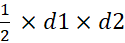
L =
L = cm2
L = 125 cm2
Jadi luas tanah adalah 125 cm2
3) Suatu belah ketupat, panjang sisinya adalah 5a cm. Jika kelilingnya adalah 260 cm, tentukanlah nilai a?
Penyelesaian:
keliling = 4 x sisi
260 cm = 4 x 5a cm
260 cm = 20 a cm
a = 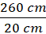
a = 13 cm
Jadi, nilai a pada belah ketupat itu adalah 13 cm
4) Gambar ABCD di atas ini adalah belah ketupat, dengan AB = 15 cm, AE = 6 cm, dan DE = 8 cm. Tentukanlah keliling dan luasnya?

Gambar 17 (Belah Ketupat)
Penyelesaian:
Jadi, keliling belah ketupat ABCD tersebut adalah 40 cm
d1 = 2 x AE = 2 x 6 cm = 12 cm
d2 = 2 x DE = 2 x 8 cm = 16 cm
maka,
Jadi, luas belah ketupat itu adalah 192 cm2
5) ketupat ABCD dengan luas 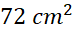. Jika panjang diagonal-diagonalnya adalah 8x dan 3x, maka tentukan nilai x dan panjang kedua diagonalnya?
Penyelesaian:
72 cm2 = 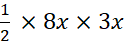
72 cm2 = 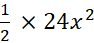
72 cm2 = 12
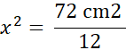
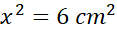
x = √6 cm
panjang kedua diagonal tersebut adalah
d1 = 8x = 8√6 cm
d2 = 3x = 3√6 cm
Jadi d1 = 8√6 cm dan d2 = 3√6 cm
6) Luas belah ketupat 162 cm persegi dan perbandingan panjang diagonal diagonalnya adalah 9:4. Tentukan panjang diagonal terpendek.?
Penyelesaian:
Jika terdapat perbandingan, kita pakai permisalan: d1 = 9a, d2 = 4a
L =
162 =
162 = 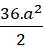
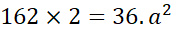
324 = 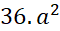
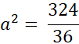
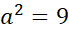
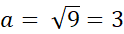
Lalu kita masukkan nilai a tersebut ke persamaan sebelumnya :
d1 = 9a
d1 = 9.3 = 27
d2 = 4a
d2 = 4 . 3 = 12
Jadi diagonal terpendeknya adalah 12 cm
7) Sebuah lapangan berbentuk belah ketupat dengan panjang sisinya 125 meter. Andi berlari mengelilingi lapangan tersebut sebanyak 3 putaran. Berapa jarak yang ditempuh Andi?
Penyelesaian:
Diketahui panjang sisi = 225 meter, banyaknya
putaran = 3
Ditanyakan jarak?
Untuk menghitung jarak, kita harus
mengetahui keliling belah ketupat.
K = 4 x s
K = 4 x 125 meter
K = 500 meter
Jarak yang ditempuh = K x banyaknya
putaran
Jarak yang ditempuh = 500 x 3 =
1.500 meter
Jadi, jarak yang ditempuh Andi
sepanjang 1.500 meter
8) Panjang diagonal-diagonal suatu belah ketupat diketahui berturut-turut 62 cm dan (6x + 7) cm. Luas belah ketupat tersebut . Berapakah nilai x?
Penyelesaian:
Diketahui d1 dan d2 = 62 cm dan (6x + 7) cm, luas
=
Ditanyakan nilai x?
L =
2.077= 31 x (6x + 7)
2.077 = 186 x + 217
186x = 2.077 - 217
186x = 1.860
x = 1.860 : 186
x = 10
Jadi nilai x = 10
9) Selembar kertas berbentuk belah ketupat dengan panjang diagonal 1 = 48 cm dan panjang diagonal 2 = 36 cm. Panjang setiap sisinya adalah 30 cm. Tentukan luas dan keliling belah ketupat tersebut!
Penyelesaian:
Diketahui d1 = 48 cm, d2 = 36 cm, panjang sisi =
30 cm
Ditanyakan luas dan keliling?
L =
L
=
L =
K = 4 x s
K = 4 x 30
K = 120 cm
Jadi, luas dan keliling belah
ketupat tersebut adalah dan 120 cm
10) Sebuah taman berbentuk belah ketupat dengan ukuran panjang sisinya 87 m. Di sekeliling taman akan dipasang lampu yang berjarak 12 m antara satu dan yang lainnya. Berapa jumlah lampu yang mengelilingi taman tersebut?
Penyelesaian:
Diketahui panjang sisi = 87 meter, jarak lampu
= 12 meter
Ditanyakan jumlah lampu?
Untuk menghitung jumlah lampu, kita
harus mengetahui keliling belah ketupat.
K = 4 x s
K = 4 x 87 meter
K = 348 meter
Banyaknya lampu = K : jarak lampu
Banyaknya lampu = 348 : 12
Banyaknya lampu = 29
Jadi, banyaknya lampu yang
mengelilingi taman ada 29.